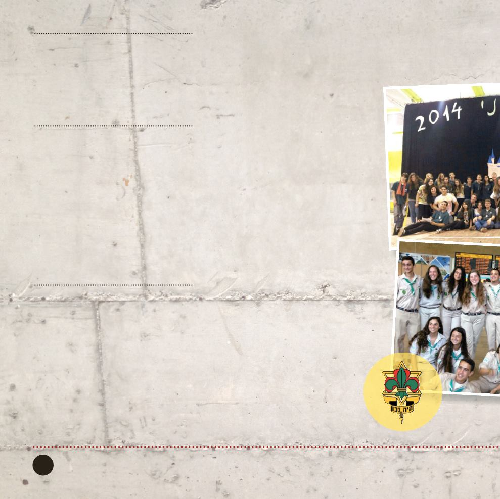

צופים
שבט און
רח׳ לוי אשכול 1, קריית אונו
קורס הדרכה
שנה של קורס הדרכה לכיתות ט‘ במסגרת
תכנית של תנועת הצופים. )מיועד גם לחניכים
חדשים, שיצטרפו השנה לצופים.(
הקורס כולל פעילות מהנה ואתגרית שבסופה
יזכו חניכי הקורס להצטרף לשכבה הבוגרת.
פעילות לשכבה הצעירה
טקס פתיחת שנה עם כתובות אש מרהיבות,
הפנינג צופיות בשבט און, טיול פתיחת שנה,
טקסי זיכרון, מסע לפידים, טיולי חנוכה, יום
צופה, פורימון, טיול פסח והאירוע הגדול של
– שיא הפעילות השבטית,
מחנה קיץ
השנה -
שמטרתו לחוות פעילות שונה וייחודית
מהפעילות במהלך השנה, במסגרת צופית
הנהגתית תוך הסתגלות לשהייה בטבע.
)היציאה למחנה מחולקת לימים עפ“י הגילאים
השונים.(
צוות הורים מתנדב
בשבט קיים ועד הורים נמרץ, שמטרתו להיות
לעזר לשבט בנושאים שונים כגון: כספים,
בטיחות, עזרה במפעלים, עזרה במחנה הקיץ
ועוד.
ימי הפעילות:
ב
ימי שלישי בין השעות 00:71-00:91
יום שישי בין השעות 00:61-00:81
יום חמישי )רק לשכב“ג( 00:81-00:12
ובמשך השבוע ובשבתות עפ"י האירועים השונים.
15
מחלקת הנוער / טל: 5311003-450
תנועת הצופים מונה כיום 000,57 בני נוער
הפזורים ב-091 שבטי התנועה והינה תנועת
הנוער הגדולה בישראל.
התנועה זכתה להכרה כתנועת נוער א-מפלגתית
המחנכת את חניכיה לאזרחות טובה, מעורבות
בקהילה ומפתחת בהם מנהיגות צעירה.
שבט און-צופי קריית אונו, המונה כיום 0031
חניכים, מזמין אתכם, הורים וחניכים להצטרף
אלינו בתנופה חינוכית ולקחת חלק משמעותי
בעיצוב דמותה האיכותית של החברה בישראל
ובקריית אונו בפרט, דרך מגוון פעילויות
חברתיות וחווייתיות, המהוות מקור לפיתוח
אישי ולבילוי והנאה ייחודיים.
השכבה הבוגרת בשבט מובילה פעילות
חינוכית-התנדבותית בקרב האוכלוסיות השונות
בקריית אונו: חניכי קורס ההדרכה מאמצים את
המוסדות השונים בעיר, בשבט פועלות כמה
קבוצות לחניכים בעלי צרכים מיוחדים בגילאי
01-61 ועוד... פעילות לשכבה הבוגרת, טיולי
חנוכה דרום, סמינרים, ימי כיף, העשרות
ועוד...
עקב הגדילה המשמעותית בשנים האחרונות,
ייפתח השנה לשבט שטח פעילות נוסף אשר
יספק מענה לקבוצות חניכים שגרים רחוק
מהשבט.